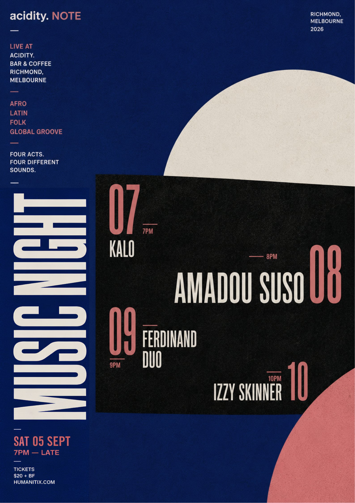

Live at Acidity
Acidity. Note — Music Night
Four acts. Four sets. Afro, Latin, folk and global groove from 7PM until late.
- Date
- Saturday, 5 September 2026
- Time
- Doors 7PM
- Line-up
- 7PM — KALO
8PM — Amadou Suso
9PM — Ferdinand Duo
10PM — Izzy Skinner - Tickets
- $20 + booking fee